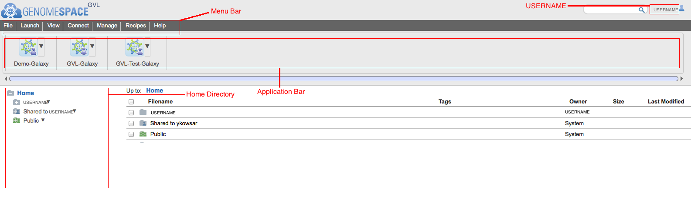
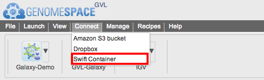
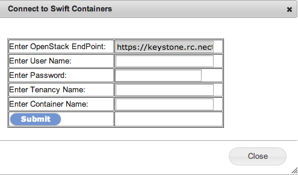
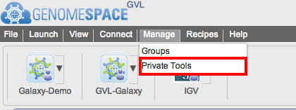
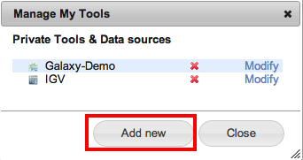
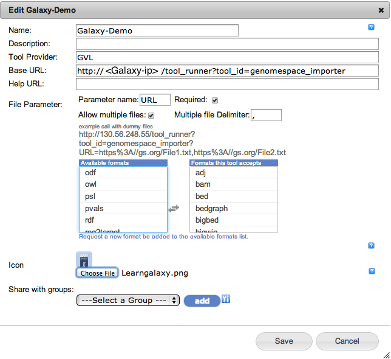
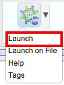
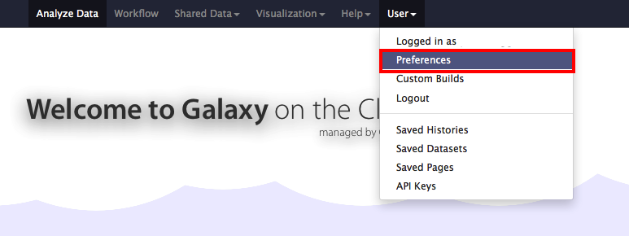
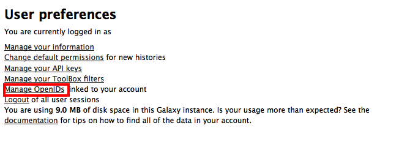
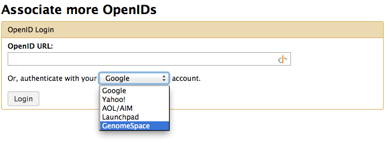

GenomeSpace is a cloud-based interoperability framework to support integrative genomics analysis through an easy-to-use Web interface. GenomeSpace provides access to a diverse range of bioinformatics tools, and bridges the gaps between the tools, making it easy to leverage the available analyses and visualizations in each of them. The tools retain their native look and feel, with GenomeSpace providing frictionless conduits between them through a lightweight interoperability layer.
GenomeSpace does not perform any analyses itself; these are done within the member tools wherever they live – desktop, Web service, cloud, in-house server, etc. Rather, GenomeSpace provides tool selection and launch capabilities, and acts as a data highway automatically reformatting data as required when results move from the output of one tool to input for the next.
The GVL GenomeSpace can be found at https://genomespace.genome.edu.au.
GenomeSpace uses a few dialogue boxes to communicate with the NeCTAR cloud. If you have an AdBlocker installed, the dialogues will not be shown properly. If you have an AdBlocker on your system please disable it for the GenomeSpace.genome.edu.au domain.
To register a GenomeSpace account you need to have a valid email address and do the following:
Go to https://genomespace.genome.edu.au/ and click on the "Register new GenomeSpace user" link:
Enter your preferred username, password and the valid email address and click the Sign up button.
Note: You will receive an error if the username has already been taken. If everything goes right you will see the following page.
Activate your account by following the link in the email from GenomeSpace titled “GenomeSpace user registration”. Your account is now active.
Go to https://genomespace.genome.edu.au and enter the username and password you created in the previous steps. You will be logged in into GenomeSpace.
In a few seconds you will be redirected to your Home page.
 On this page you can find the following items:
(These instructions are for the NeCTAR Australian Research Cloud. For any other OpenStack-based cloud storage please change the parameters as necessary.)
NeCTAR object storage is a place that people with NeCTAR credentials can store their data reliably. Containers can be found under the Object Store link in NeCTAR’s dashboard.
To browse through available containers, go to the NeCTAR dashboard at https://dashboard.rc.nectar.org.au . On the left hand side of the dashboard you can find the Object Store. By "Containers" you can see all the available containers within your tenancy.
To mount an available container go to Connect menu bar in GenomeSpace and select Swift Container. 
You will see a new page as follows:

To fill out this form you need the following parameters:
Under the containers directory you can perform basic file manipulation as follows:
PREREQUISITE: Please make sure you have an account on the Galaxy server you want to add to GenomeSpace. If you have launched a GVL instance, this is a new instance of Galaxy and you will need to register a Galaxy account in your new Galaxy server first.
The latest GVL image is fully compatible with GenomeSpace. Galaxy launched as part of GVL instances can be connected to GenomeSpace as follows:
From the Menu bar go to the manage menu and select Private Tool. 
From the opened window press the "Add new" button.

In the new window fill out the form as follows:
A sample page can be seen in the following image: 
Launching the added Galaxy from GenomeSpace: From GenomeSpace click on the Arrow on the right side of your Galaxy application in the Application bar and select launch.
Galaxy will be opened in a new window.

(Note: Your browser may block the pop-up. Allow the pop-up accordingly).
From the opened Galaxy login and under your username go to the preferences options 
and select the Manage OpenIDs links: 
From the associate more OpenID select GenomeSpace and press login. GenomeSpace will be appear as link on the top as a URL.

From now on your Galaxy can talk to GenomeSpace under your UserName.
PREREQUISITE: Please make sure you have connected your Galaxy to GenomeSpace first (How to).
Sending a file:
Receiving a file:
Under each file click on the store icon and choose "Send to GenomeSpace". A dialog will be opened. Choose the directory to store the file and enter the name of the file to store. If you do not provide the file name the file will be stored as “display”. By clicking the Send button the file will be sent to GenomeSpace. The dialog box will close on success.